Tutorial do Ensaio
Um passo a passo com as telas do app, do primeiro áudio até o ensaio com a banda. As músicas e letras das imagens são exemplos.
1Adicionar músicas
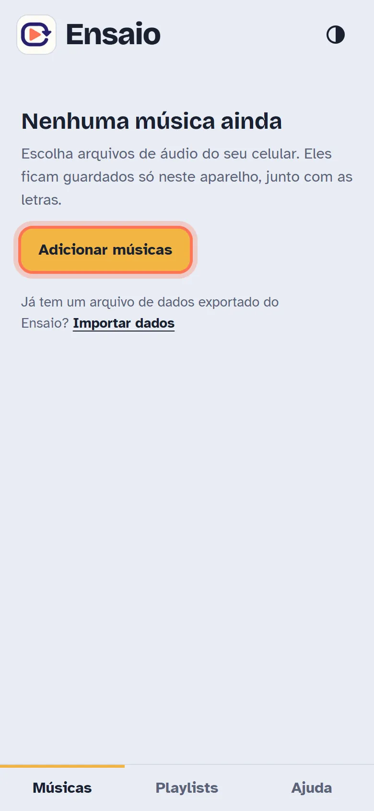
A primeira vez
- Na aba Músicas, toque em Adicionar músicas.
- Escolha um ou mais arquivos de áudio do celular (MP3, M4A e outros que o navegador toque).
- Espere o aviso “Música adicionada”.
O nome do arquivo vira o nome da música, com “_” trocado por espaço. Dá para renomear depois.
Trocou de celular e tem um backup? Toque em Importar dados antes de adicionar os áudios. Veja Backup e troca de celular.
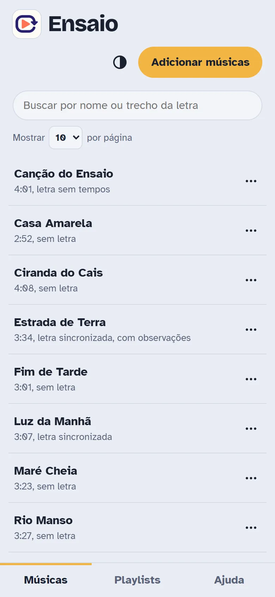
A lista de músicas
Embaixo de cada nome aparece a duração e a situação da letra:
- sem letra: ainda não tem letra;
- letra sem tempos: tem o texto, mas ainda não foi sincronizada;
- letra sincronizada: o verso acende junto com a música.
Toque no nome de uma música para começar a tocar. A música que está tocando fica em destaque.
2Buscar e navegar na lista
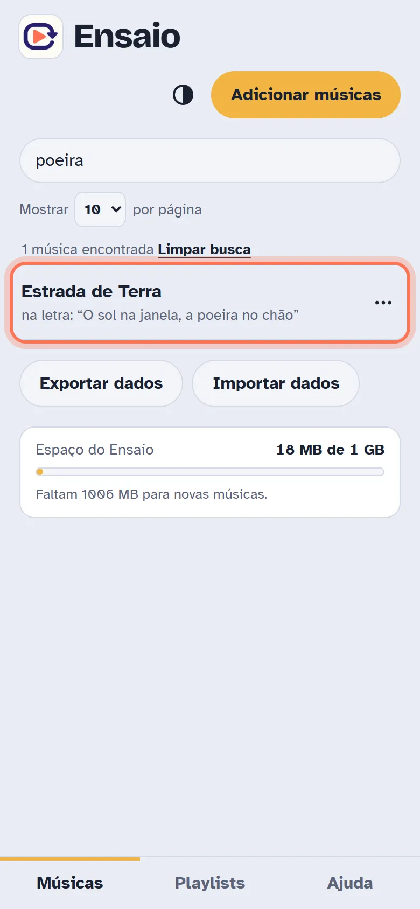
Busca por nome ou trecho da letra
Digite parte do nome ou qualquer pedaço da letra. Maiúsculas e acentos não fazem diferença.
Quando o trecho só aparece na letra, o verso encontrado é mostrado embaixo do nome, como no exemplo com “poeira”.
Tocar uma música a partir da busca faz a fila ser só as músicas encontradas. Limpar busca volta à lista toda.
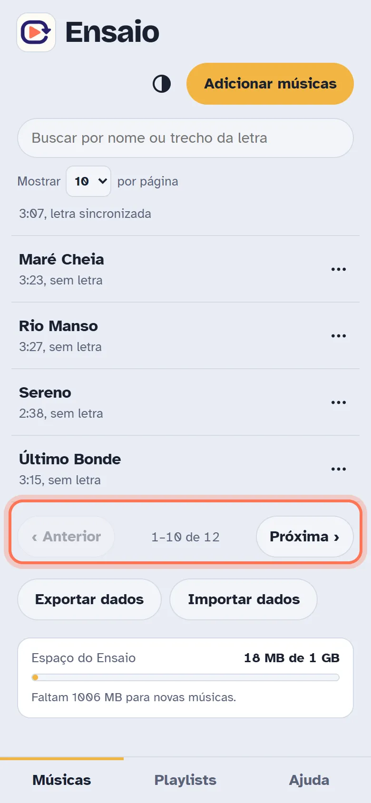
Páginas e espaço usado
A lista mostra 10, 20 ou 50 músicas por vez. Escolha em Mostrar, no alto, e use Anterior e Próxima no fim da lista.
Mais abaixo ficam Exportar dados e Importar dados e o quadro Espaço do Ensaio, que mostra quanto dos 1 GB de áudio já foi usado e quanto falta. Dá umas 100 a 200 músicas em MP3.
Se enche, exclua as músicas que saíram do repertório. As letras podem ser guardadas antes com Exportar dados.
4Playlists
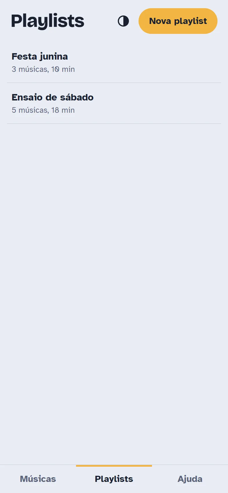
Criar uma playlist
- Na aba Playlists, toque em Nova playlist.
- Dê um nome, como “Ensaio de sábado”.
Cada playlist mostra quantas músicas tem.
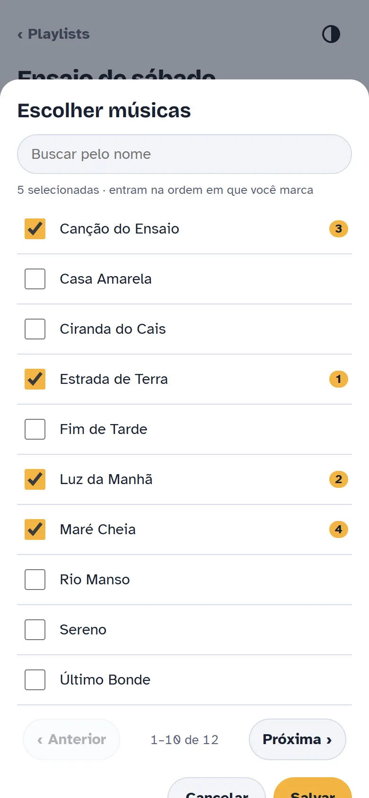
Escolher as músicas
Toque em Escolher músicas e marque as músicas. Elas entram na ordem em que você marca, e o número amarelo mostra a posição.
A busca e as páginas ajudam a achar cada uma. O que você marcou continua marcado ao trocar de página ou de busca.
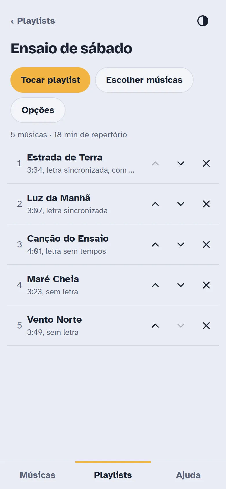
Ordem e tocar
- As setas sobem e descem a música na ordem.
- O × tira a música só da playlist, sem apagar do aparelho.
- Tocar playlist começa da primeira; tocar no nome começa daquela música.
- Opções renomeia ou exclui a playlist. Excluir a playlist não apaga as músicas.
5Tocar e o player
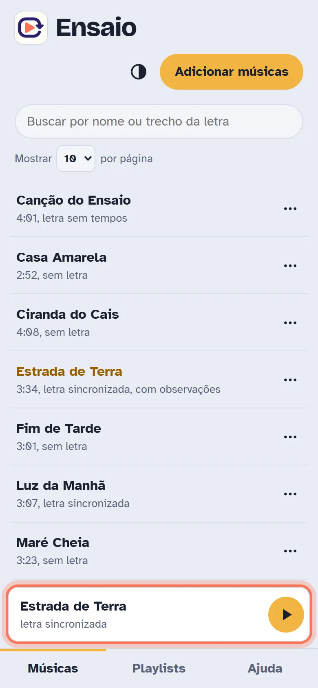
A barra da música atual
Enquanto toca, a música atual aparece numa barra no rodapé, acima das abas. O botão redondo toca e pausa.
Toque no nome para abrir o player. Dá para navegar pelo app sem parar a música.
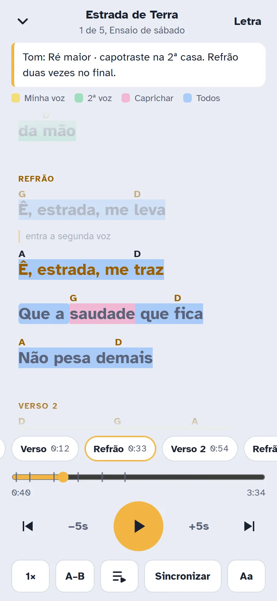
O player
- Seta no alto à esquerda: fecha o player sem parar a música.
- Letra (alto à direita): editar, ajustar tempos, transpor, esconder as cifras ou exportar a letra.
- Partes (acima da barra de posição): pule direto para o verso, o refrão… Veja Partes da música.
- Letra rolando: o verso atual fica destacado e a tela acompanha. Tocar num verso pula a música para ele.
- Barra de posição: arraste para ir a qualquer ponto.
- Anterior: volta ao começo; nos 3 primeiros segundos, vai para a música anterior.
- −5s e +5s: voltam ou avançam 5 segundos.
- Próxima: vai para a próxima da fila.
Com o player aberto e tocando, a tela fica acesa. Os controles também aparecem na tela de bloqueio e funcionam nos fones.
6Partes da música
Marque onde começa a Intro, o Verso, o Refrão… e vá direto para a parte que a banda quer repetir.
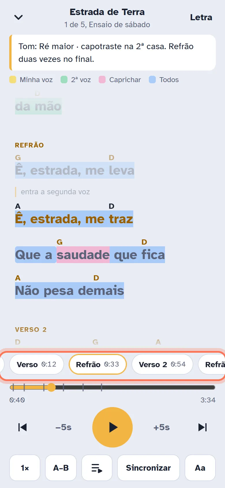
Marcar as partes
- Toque a música até o começo de uma parte.
- Toque em + Parte, no fim da fileira acima da barra de posição.
- Escolha o nome: Intro, Verso, Pré-refrão, Refrão, Ponte, Solo, Final ou outro. Nome repetido vira “Verso 2”, “Refrão 2”.
Tocar numa parte leva a música para o começo dela. A parte que está tocando fica contornada, e a fileira rola sozinha para mostrá-la.
As partes também aparecem como traços na barra de posição e como rótulo (VERSO, REFRÃO) na letra sincronizada.
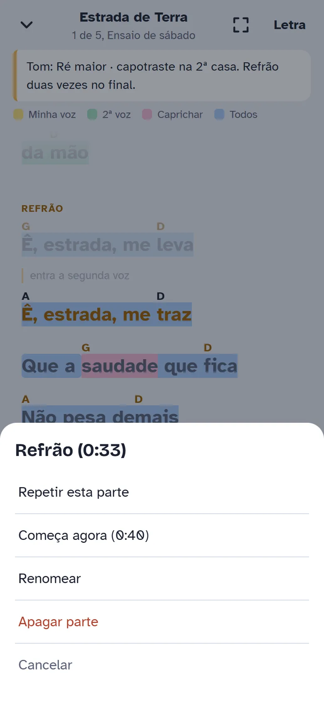
Segurar uma parte
- Repetir esta parte: repete do começo dela até o começo da próxima.
- Começa agora: marcou um pouco antes ou depois? Toque a música até o ponto certo e use esta opção.
- Renomear e Apagar parte.
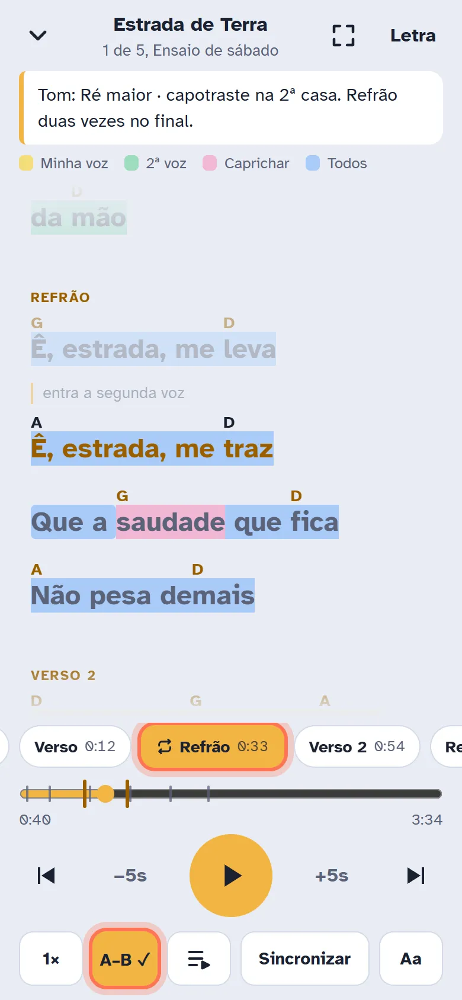
Repetindo uma parte
A parte fica amarela, com o ícone de repetição, e o A–B fica ligado com o início e o fim dela. Dá para combinar com a velocidade.
Com uma parte repetindo, tocar em outra parte passa a repetir a outra: “agora a ponte” é um toque só.
Para parar, toque em A–B ✓.
7Observações da música
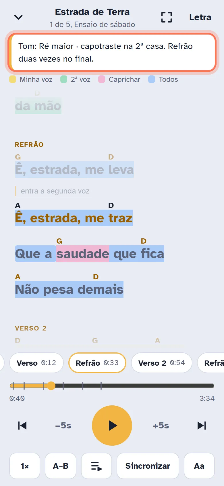
As observações ficam numa faixa logo abaixo do título, sempre à vista durante a música. Servem para tom, capotraste, estrutura ou qualquer lembrete geral.
Quando a música ainda não tem observações, a faixa mostra + Adicionar observação.
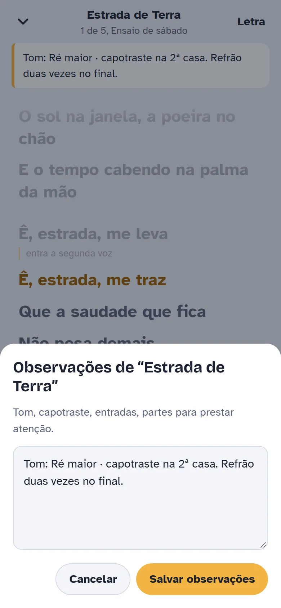
Toque na faixa para escrever ou mudar, até 1000 caracteres. Para apagar, deixe o campo vazio e salve.
Também dá para abrir pelo menu ⋯ da música, na lista.
8Colocar a letra
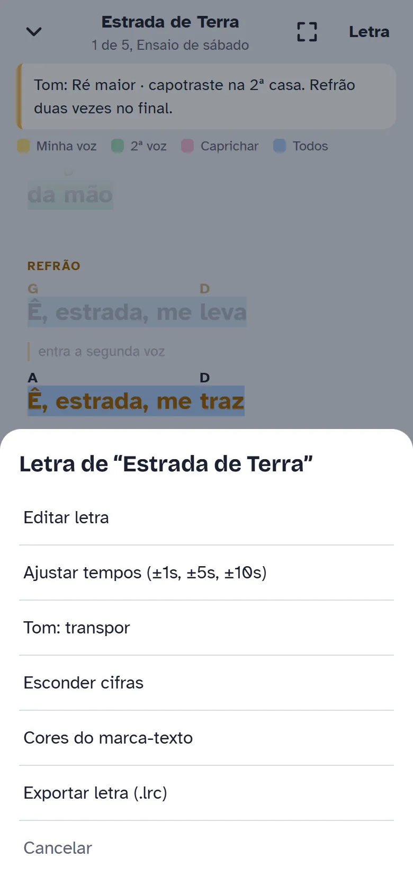
No player, toque em Letra e em Adicionar letra (ou Editar letra, se ela já existe).
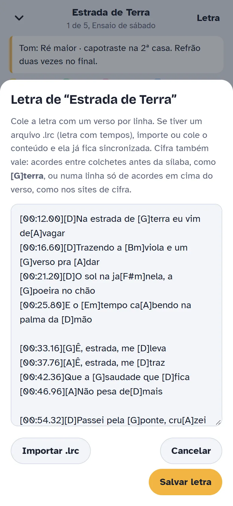
- Cole a letra com um verso por linha. Linhas em branco viram espaços entre as partes.
- Toque em Salvar letra.
Tem a cifra? Cole com os acordes; veja Cifras e tom.
Tem um arquivo .lrc (letra com tempos)? Toque em Importar .lrc ou cole o conteúdo: a letra já fica sincronizada.
Numa letra sincronizada, cada linha começa com o tempo entre colchetes, como [00:12.40]. Para corrigir uma palavra sem mexer nos tempos, é mais fácil segurar o verso no player.
9Cifras e tom
Acordes em cima da letra
Os acordes aparecem em cima da sílaba e acompanham a letra sincronizada. No verso que está tocando, eles ficam mais escuros, para ler rápido.
Para colocar, cole a cifra no editor de letra em um destes formatos:
- Acordes entre colchetes, antes da sílaba:
[D]Na estrada de [G]terra. Funciona junto com os tempos .lrc. - Como nos sites de cifra: uma linha só de acordes em cima do verso. O Ensaio junta cada acorde com a sílaba embaixo dele.
Uma linha só de acordes, sem verso, aparece como trecho instrumental. Para corrigir um acorde, segure o verso.
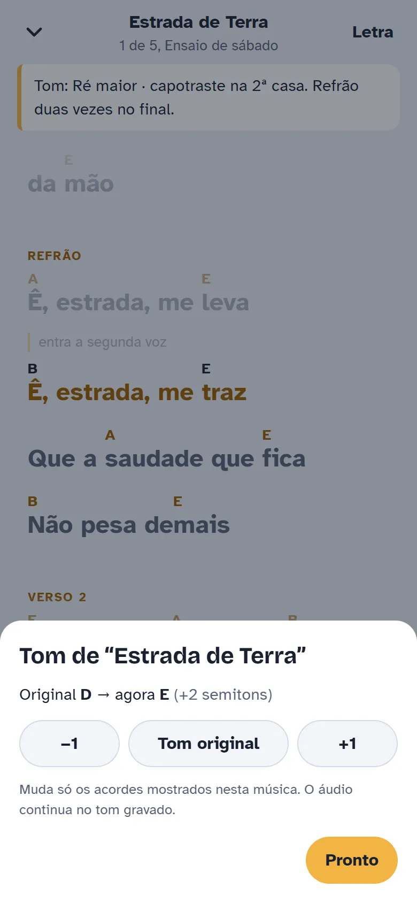
Transpor e esconder
- Letra → Tom: transpor: −1 e +1 descem e sobem meio tom; a janela mostra o tom original e o atual. Vale só para esta música e fica guardado.
- Tom original volta tudo como era.
- Letra → Esconder cifras, para quem só canta. Vale para todas as músicas deste aparelho.
Transpor muda só os acordes mostrados. O áudio continua no tom em que foi gravado.
10Sincronizar a letra
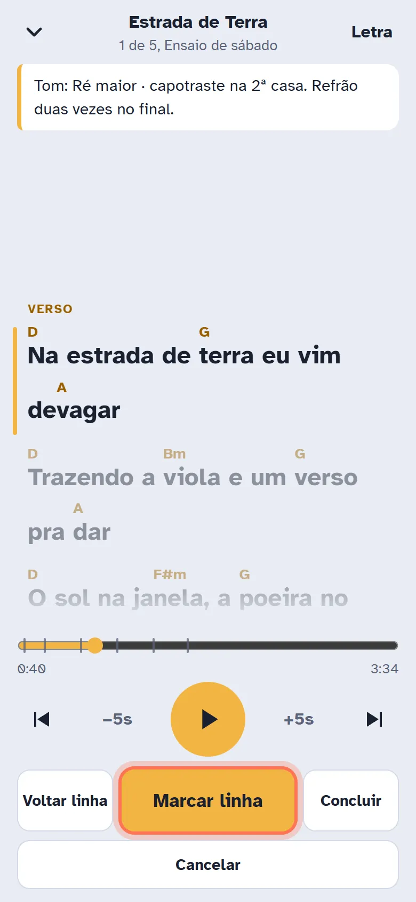
- Toque em Sincronizar. A primeira linha fica marcada com um traço amarelo.
- Dê play.
- Toque em Marcar linha no instante em que cada verso começa. O Ensaio já desconta o pequeno atraso do toque.
- Errou? Voltar linha recua a música e você marca de novo.
- Para recomeçar de um verso, toque nele.
- Ao marcar a última linha, tudo é salvo. Concluir salva antes do fim; Cancelar descarta esta tentativa.
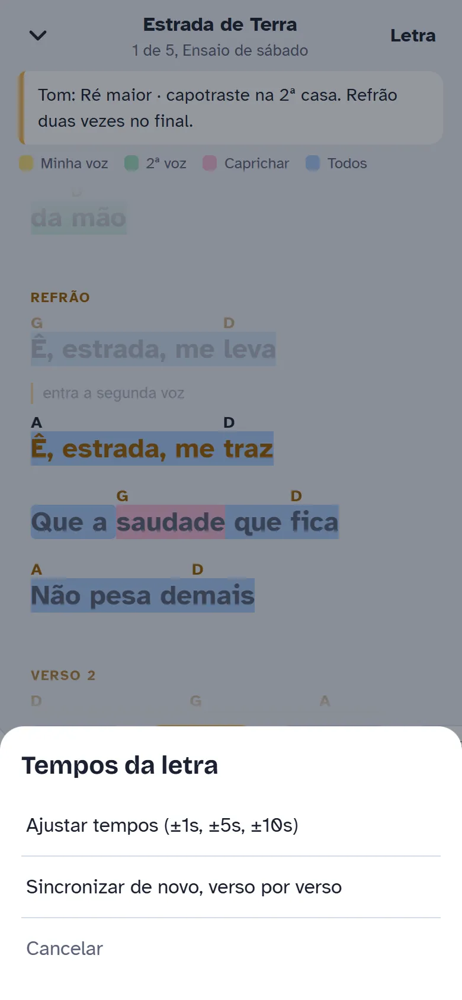
Se a letra já tem tempos, Sincronizar pergunta o que fazer:
- Ajustar tempos: corrige versos que acendem cedo ou tarde (próximo passo);
- Sincronizar de novo, verso por verso: marca tudo outra vez.
11Ajustar tempos
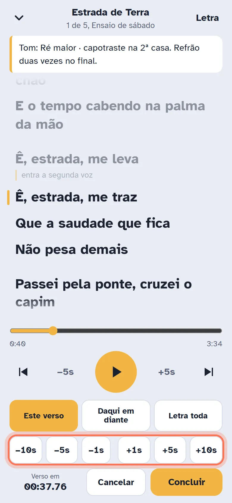
Para corrigir um verso que acende antes ou depois, sem sincronizar tudo de novo:
- Toque em Sincronizar → Ajustar tempos (também está em Letra).
- Toque no verso a corrigir. Ele fica marcado com o traço amarelo.
- Escolha o alcance: Este verso, Daqui em diante (este e todos os seguintes) ou Letra toda.
- Use −10s −5s −1s para o verso acender antes, ou +1s +5s +10s para acender depois.
- Concluir salva; Cancelar volta tudo como estava.
A cada toque a música volta 2 segundos antes do verso e toca, para você conferir na hora. Embaixo à esquerda aparece o tempo do verso.
A letra toda está adiantada ou atrasada igual? Escolha Letra toda e resolva com um toque.
12Corrigir um verso e anotar
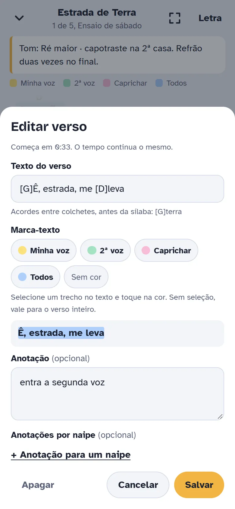
No player, segure o dedo sobre um verso por meio segundo, sem arrastar. Abre a janela Editar verso:
- Texto do verso: corrija uma palavra sem abrir a letra toda. Se o verso tem acordes, eles aparecem entre colchetes, como
[G]Ê, estrada: mude, apague ou acrescente. O tempo do verso continua o mesmo. - Anotação: um lembrete preso a esse verso, como “entra a segunda voz”, até 200 caracteres. Aparece embaixo do verso, com um traço amarelo (veja na imagem do player).
- Apagar: remove o verso (pede confirmação). Os outros versos mantêm seus tempos.
Para apagar só a anotação, deixe o campo vazio e salve.
13Ferramentas de ensaio
A fileira de botões no rodapé do player: velocidade, A–B, ao terminar, Sincronizar e Aa.
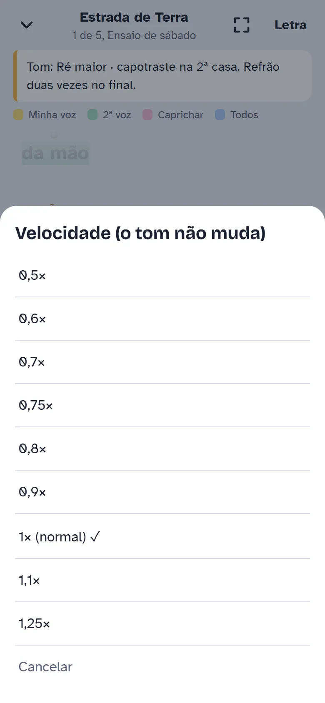
Velocidade (1×)
De 0,5× a 1,25× sem mudar o tom. Ótimo para tirar uma passagem rápida devagar e ir subindo.
O botão fica amarelo quando não está na velocidade normal, e a velocidade vale para todas as músicas até você mudar.
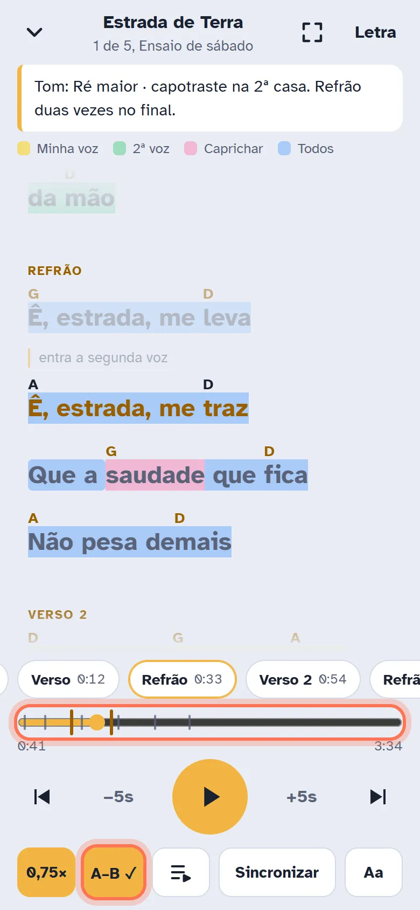
Repetir um trecho (A–B)
- Toque em A–B no começo do trecho.
- Toque em Marcar B no fim.
- O trecho repete sem parar. As marcas aparecem na barra de posição.
- Toque em A–B ✓ para desligar.
O trecho desliga sozinho ao trocar de música. Combine com a velocidade para estudar passagens difíceis.
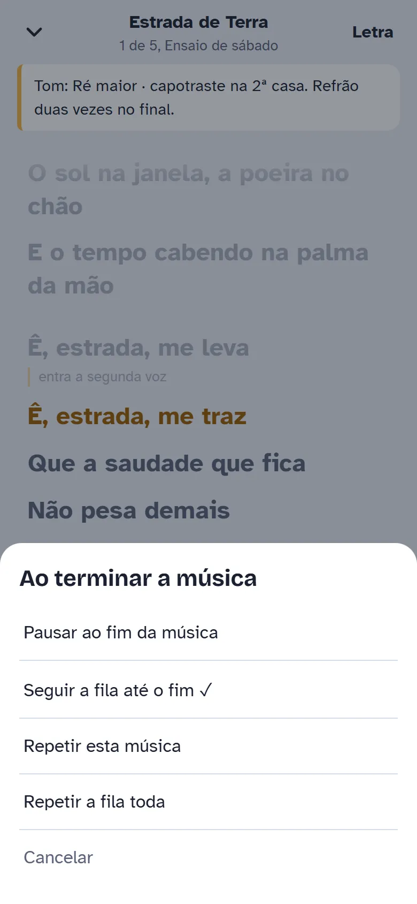
Ao terminar a música
O ícone ao lado do A–B escolhe o que acontece quando a música acaba:
- Pausar ao fim da música: para e volta ao começo da mesma música. Bom para tocar uma vez e conversar com a banda.
- Seguir a fila até o fim: passa para a próxima e para depois da última. É o padrão.
- Repetir esta música: recomeça a mesma sem parar.
- Repetir a fila toda: depois da última, volta para a primeira.
O ícone fica destacado quando não está no padrão.
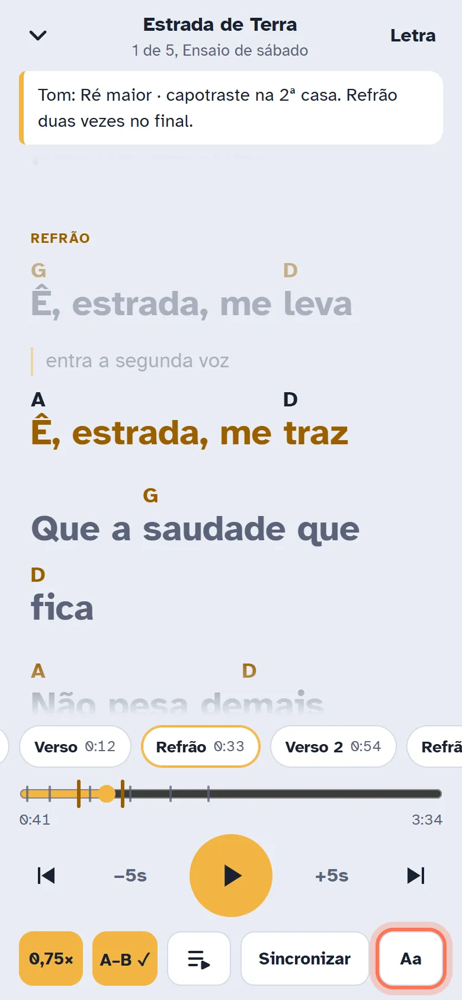
Tamanho da letra (Aa)
Cada toque alterna entre letra média, grande e pequena. A grande ajuda a ler de longe, com o celular na estante.
14Exportar a letra (.lrc)
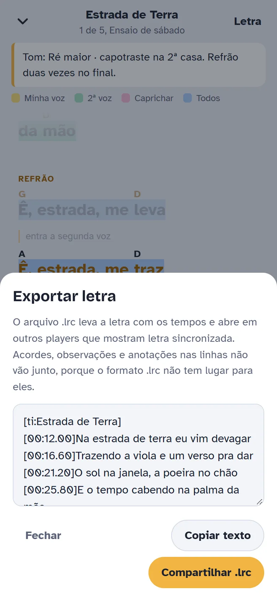
Em Letra → Exportar letra (.lrc), ou no menu ⋯ da música:
- Compartilhar .lrc: manda o arquivo pelo menu de compartilhar do celular. É o melhor caminho.
- Baixar arquivo: quando aparece, salva como
.lrc.txt; renomeie tirando o “.txt”. - Copiar texto: copia o conteúdo.
O .lrc abre em outros players com letra sincronizada. Acordes, observações e anotações não vão nele; para levá-las, use Exportar dados.
15Tema claro ou escuro
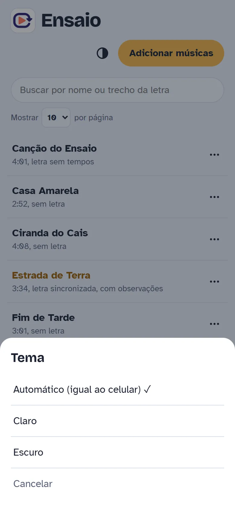
Toque no círculo meio preenchido no alto da tela e escolha:
- Automático: segue o tema do celular;
- Claro: lê melhor sob sol;
- Escuro: cansa menos a vista à noite ou no palco.
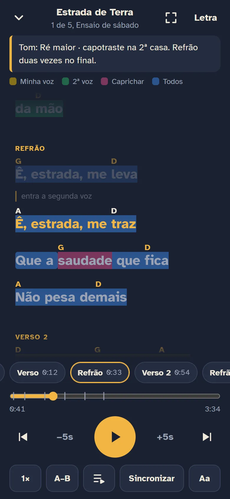
O player no tema escuro. A escolha fica guardada neste aparelho.
16Backup e troca de celular
Tudo fica só no navegador deste celular. Limpar os dados do navegador apaga tudo, então faça um backup de vez em quando.
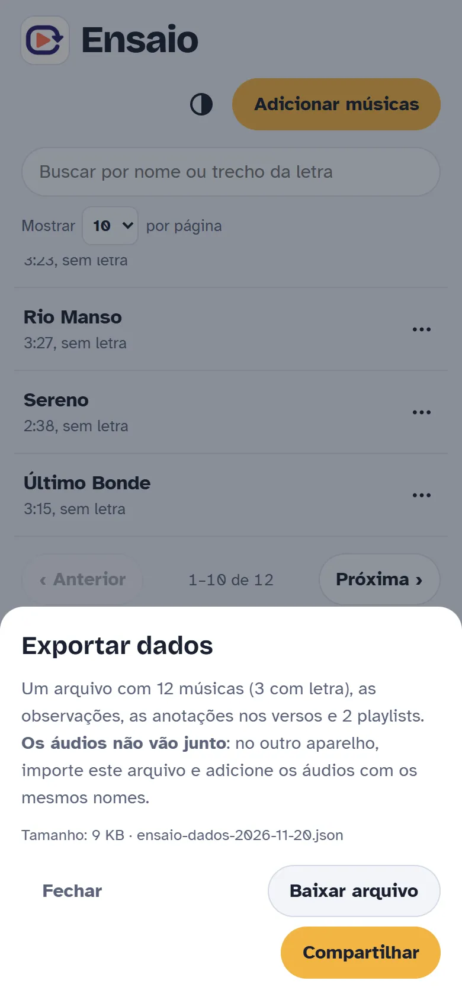
Exportar dados
No fim da aba Músicas, toque em Exportar dados. Sai um arquivo .json pequeno com as letras e seus tempos, as cifras e o tom, as partes, as observações, as anotações e as playlists.
Os áudios não vão junto, para o arquivo continuar leve. Guarde no Drive ou mande para você mesmo por mensagem ou e-mail.
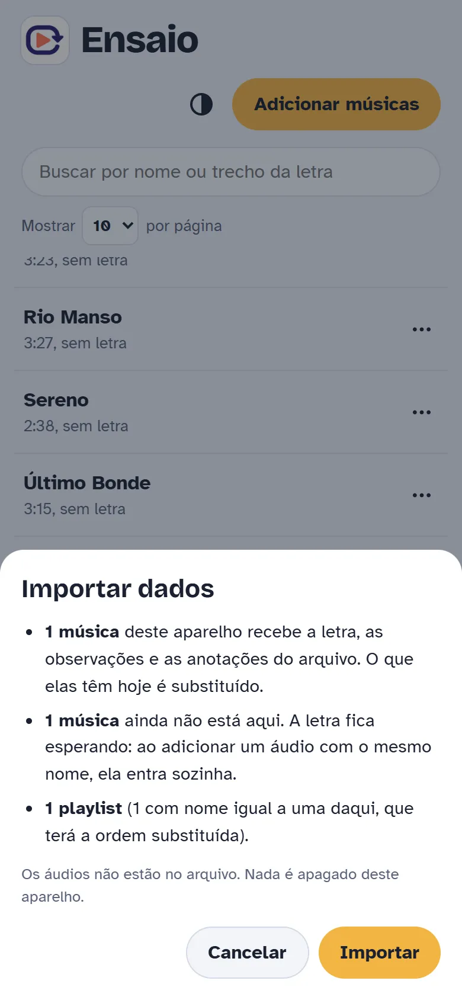
Importar dados
- No outro celular (ou depois de limpar o navegador), toque em Importar dados e escolha o arquivo.
- O Ensaio mostra o que vai acontecer antes de mudar qualquer coisa.
- Toque em Importar.
Músicas com o mesmo nome recebem a letra, as observações e as anotações do arquivo. Nada é apagado do aparelho.
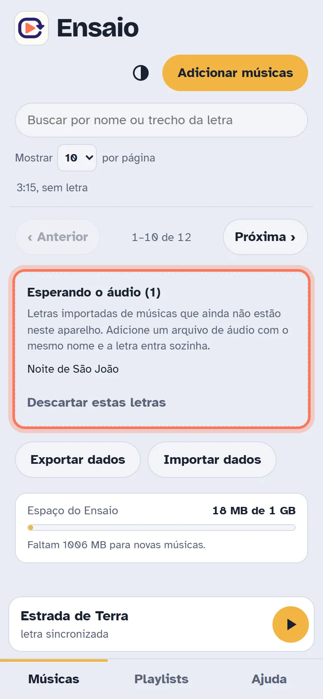
Esperando o áudio
As músicas do arquivo que ainda não estão no aparelho ficam em Esperando o áudio. Adicione os áudios com os mesmos nomes de arquivo e cada letra entra sozinha, inclusive na posição certa da playlist.
O nome é comparado sem diferença de maiúsculas, acentos e “_”.
17Instalar e atualizar
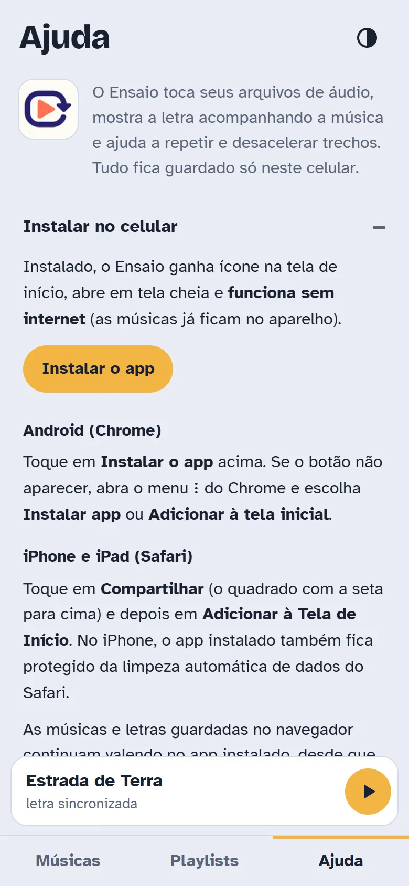
Instalar no celular
Instalado, o Ensaio ganha ícone na tela de início, abre em tela cheia e funciona sem internet.
- Android (Chrome): na aba Ajuda, toque em Instalar o app. Se o botão não aparecer, use o menu ⋮ do Chrome → Instalar app.
- iPhone e iPad (Safari): toque em Compartilhar (quadrado com seta) → Adicionar à Tela de Início. No iPhone, isso também protege os dados da limpeza automática do Safari.
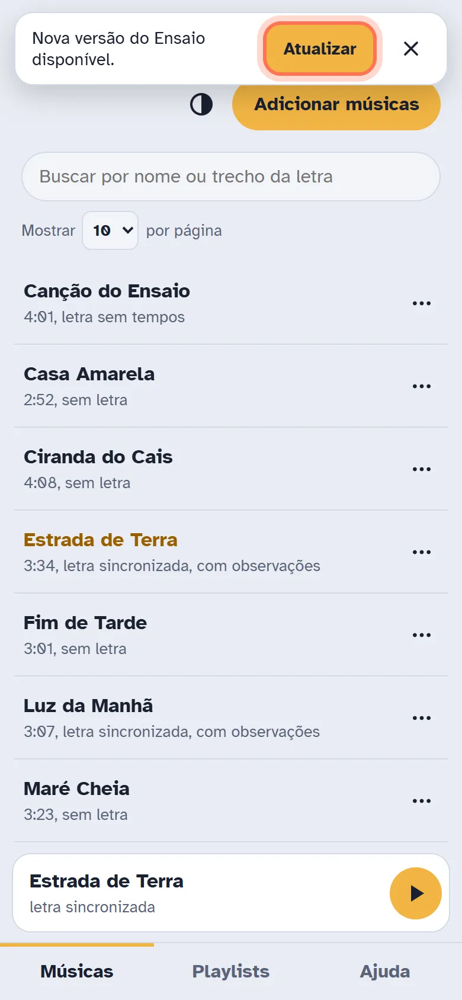
Nova versão
Quando sai uma versão nova, aparece no alto o aviso “Nova versão do Ensaio disponível”. Toque em Atualizar quando puder; o app só recarrega nessa hora, para não cortar uma música no meio. O × deixa para depois.
Músicas, letras e playlists não são afetadas pela atualização.
18Roteiro de um ensaio
Antes
- Adicione os áudios e cole as letras.
- Sincronize as músicas novas, cole as cifras e anote tom e capotraste nas observações.
- Marque as partes (Intro, Verso, Refrão…).
- Monte a playlist na ordem do ensaio.
- Faça um Exportar dados para garantir.
Estudando sozinho
- Segure a parte difícil e escolha Repetir esta parte (ou marque um trecho com A–B).
- Baixe para 0,75× e vá subindo até 1×.
- Use Repetir esta música para passar várias vezes sem tocar no celular.
- Segure os versos para anotar entradas e respirações.
No ensaio
- Tema escuro e letra grande (Aa) para ler de longe.
- Pausar ao fim da música para conversar entre uma e outra.
- “Do refrão!”: toque na parte, ou num verso, para ir direto.
- Mudou o tom? Tom: transpor e a cifra acompanha.
- Com o player aberto, a tela não apaga.
Ficou alguma dúvida? A aba Ajuda do app tem a seção Problemas comuns.